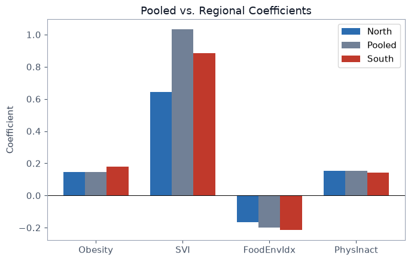

The single shared assumption behind OLS, SLM, and SEM alike, one β for the whole region, tested directly, and the bridge to Part 6. This notebook is Part 3. Spatial Regression (Chapter 3.6 of 7). The worked example uses diabetes_atlantic.shp (666 counties), split into northern and southern halves. The methods come from geolattice.spatial_statistics.regression.
Overview
Chapters 3.2-3.5 chose carefully between OLS, SLM, SEM, and their Durbin extensions: but every one of those models shares an assumption none of the diagnostics so far has tested: that a single coefficient \(\beta_k\) describes the relationship between covariate \(k\) and diabetes prevalence everywhere in the study region at once. This short chapter tests that assumption directly, on the same data used throughout Part 3, and finds that it does not hold.
Step
What we do
Statement
Make explicit what “global” means for OLS, SLM, and SEM alike
Direct test
Split the 666 counties into a northern and a southern half and refit the same model on each
Formal test
A Chow test for whether the coefficient difference is more than sampling noise
Consequence
Map what a single pooled coefficient gets wrong across the two halves
Bridge
Where Part 6’s geographically weighted models pick this up
API overview
- OLS
Setup
Locate the repository root, import the spatial-statistics helpers, and point DATA at the example files.
Installation. This notebook needs installation option 3 (core, spatial analysis and spatial statistics): pip install "geolattice[statistics]". See “Installation options” in the GeoLattice README.
Code
import sysfrom pathlib import Pathimport numpy as npimport pandas as pdimport geopandas as gpdimport matplotlib.pyplot as pltfrom scipy import statsROOT = Path.cwd().resolve()for candidate in [ROOT, *ROOT.parents]:if (candidate /"pyproject.toml").is_file() and (candidate /"Data").is_dir(): ROOT = candidatebreakelse:raiseFileNotFoundError("Could not find the GeoLattice repository root.")sys.path.insert(0, str(ROOT))DATA = ROOT /"Data"/"00_shared"/"data_spatial_stat"import geolattice.spatial_statisticsfrom geolattice.viz import apply_map_stylefrom geolattice.spatial_statistics.regression import OLSapply_map_style()C = {"blue": "#2b6cb0", "red": "#c0392b", "green": "#2f855a", "orange": "#dd6b20","grey": "#718096", "purple": "#6b46c1", "teal": "#2c7a7b"}counties = gpd.read_file(DATA /"diabetes_atlantic.shp")covariates = ["Obesity", "PhysInact", "Acc_Exer", "PCP_rate", "FoodEnvIdx", "SVI"]print(f"geolattice.spatial_statistics : version {geolattice.spatial_statistics.__version__}")
geolattice.spatial_statistics : version 0.3.49
Every Model in This Part Is Global
OLS (\(y=X\beta+\varepsilon\)), SLM (\(y=\rho Wy+X\beta+\varepsilon\)), and SEM (\(y=X\beta+u\)) all estimate exactly one\(\beta_k\) per covariate, shared by all 666 counties. This is not a limitation of any one estimator’s implementation: it is baked into the model specification itself, before any fitting happens. Whatever spatial structure these models capture (a lag \(\rho Wy\), an error process \(\lambda Wu\)) sits alongside a uniform relationship between \(X\) and \(y\); none of them let the relationship’s strength itself vary by location.
If the true relationship between, say, obesity and diabetes prevalence is genuinely stronger in one part of the region than another: a real possibility, since access to care, diet, genetics, and reporting practices all vary geographically: a global model forces a single compromise value on every county, fitting none of them particularly well.
Testing It Directly: A North/South Split
Splitting the 666 counties at the median latitude gives two geographically coherent halves of similar size, and refitting the same OLS specification separately on each is the simplest possible test of whether \(\beta\) really is constant across space.
Obesity’s coefficient is 23% larger in the South (0.178) than the North (0.145); SVI’s is 38% larger (0.887 vs. 0.643); Urban even changes sign (+0.005 in the North, −0.135 in the South), though neither individual value is far from zero. The pooled coefficient (the one every model in Chapters 3.2-3.5 reports) is, for every covariate, a compromise that fits neither half as well as its own local regression does.
A Formal Test for the Difference
Is this difference more than sampling noise? A Chow test compares the residual sum of squares from the pooled model against the sum of the two separate regressions’ residual sums of squares: if splitting the data does not improve fit beyond what extra free parameters alone would predict, the pooled model is not losing anything real.
RSS pooled : 410.91
RSS split (N + S): 397.00
Chow F(8, 650) = 2.847, p = 0.0041
F = 2.85, p = 0.004: the null hypothesis of identical coefficients North and South is rejected at conventional significance. This is not a large effect by the standards of, say, a treatment/control experiment : but it is a real, statistically detectable failure of the “one \(\beta\) for the whole region” assumption that every model fitted in Chapters 3.2-3.5 shares, on the very data those models were fitted to.
Mapping the Consequence
What does the pooled model get wrong, concretely? Its Obesity coefficient (0.146) sits between the two regional estimates: too high for the North’s true relationship, too low for the South’s.
Code
fig, ax = plt.subplots(figsize=(7, 4.5))labels = ["Obesity", "SVI", "FoodEnvIdx", "PhysInact"]x = np.arange(len(labels))width =0.25ax.bar(x - width, [ols_north.beta[coef_table.index.get_loc(l)] for l in labels], width, label="North", color=C["blue"])ax.bar(x, [pooled.beta[coef_table.index.get_loc(l)] for l in labels], width, label="Pooled", color=C["grey"])ax.bar(x + width, [ols_south.beta[coef_table.index.get_loc(l)] for l in labels], width, label="South", color=C["red"])ax.axhline(0, color="k", lw=0.7)ax.set_xticks(x)ax.set_xticklabels(labels)ax.set_ylabel("Coefficient")ax.set_title("Pooled vs. Regional Coefficients")ax.legend()plt.tight_layout()plt.show()

For every covariate shown, the pooled (grey) bar sits between the North and South estimates: exactly what a single compromise value looks like. A county in the South, whose true SVI relationship is closer to 0.89, is systematically under-predicted by a model using the pooled value of 1.03 whenever SVI is high; a county in the North is over-predicted by the same amount in the other direction. Neither error shows up as a spatially autocorrelated residual the way Chapter 3.2’s diagnostics would catch (both halves’ own residuals can still be individually well-behaved): it shows up as a form of specification bias that is spatially structured but invisible to Moran’s I on the pooled residuals, because it is smooth curvature in how the relationship itself changes, not clustering in leftover noise.
The Bridge to Part 6
Splitting the data into two arbitrary halves is a blunt instrument: real geographic variation in a relationship’s strength is rarely a clean step function at one latitude, and choosing where to split is itself an arbitrary, MAUP-flavoured decision (Part 2, Chapter 2.1). Geographically weighted regression (Part 6) generalises the idea in this chapter to its natural conclusion: instead of two regressions (or one), fit a separate, smoothly varying regression centred at every location, using a kernel to weight nearby observations more heavily: recovering a continuous surface of local coefficients rather than one, two, or any fixed number of discrete regimes.
The North/South split here is best understood as an existence proof: “yes, the relationship really does vary enough to matter, and a formal test confirms it”: that motivates going to Part 6’s fully local approach rather than trying to guess the right number and shape of regional splits by hand. The joint comparison workflow that puts OLS, SLM, SEM, and GWR side by side on the same diagnostic terms is Chapter 6.8.
Summary and Conclusions
This short chapter tested the one assumption every model in Chapters 3.2-3.5 shares, and found it fails.
What we did
Stated explicitly that OLS, SLM, and SEM all assume one \(\beta_k\) per covariate, shared by every county.
Split the 666 Atlantic counties at the median latitude and refit the same specification on each half: coefficients moved by 20-40% for several covariates, and Urban changed sign.
Ran a formal Chow test: F = 2.85, p = 0.004: the pooled model’s coefficients are statistically distinguishable from a model that lets the North and South differ.
Visualised the pooled coefficient as a compromise sitting between the two regional estimates for every covariate checked.
Connected this finding to Part 6: geographically weighted regression generalises the crude two-region split into a continuous, spatially varying coefficient surface.
Practical takeaways
A model can pass every diagnostic in Chapters 3.2-3.5 (clean residual Moran’s I, significant coefficients, reasonable fit) and still hide a real, testable failure of the constant-coefficient assumption: the two are different kinds of misspecification, and only one of them shows up in a residual autocorrelation test.
A quick regional split-and-Chow-test is a cheap, informative first check for whether a relationship’s strength, not just its residuals, varies spatially: worth running before committing to any global model.
Part 6 exists specifically because two or three arbitrary geographic splits are rarely the right way to capture this kind of variation.
Next steps
Chapter 3.7 (Code Skeleton and Exercises) closes Part 3 with a compact, reusable code skeleton for the full workflow (Chapters 3.2-3.5) and five solved exercises spanning every chapter in this Part.
Fotheringham, A. S., Brunsdon, C. & Charlton, M. (2002). Geographically Weighted Regression: The Analysis of Spatially Varying Relationships. Wiley.
The full treatment this chapter previews; Part 6’s primary reference
Chow, G. C. (1960). Tests of equality between sets of coefficients in two linear regressions. Econometrica, 28, 591-605.
Origin of the Chow test used in Section 5
Key papers
Paper
Contribution
Fotheringham, A. S., Brunsdon, C. & Charlton, M. (1998). Geographically weighted regression: a natural evolution of the expansion method for spatial data analysis. Environment and Planning A, 30, 1905-1927.
Foundational GWR paper, framing it as a generalisation of exactly the kind of regional-split test used here
Brunsdon, C., Fotheringham, A. S. & Charlton, M. (1996). Geographically weighted regression: a method for exploring spatial nonstationarity. Geographical Analysis, 28, 281-298.
Formal statistical tests for spatial nonstationarity in regression coefficients
In this library
Object
Role
geolattice.spatial_statistics.regression.OLS
Reused here to fit the regional sub-models
Part 6
geolattice.spatial_statistics.gwmodel: the continuous, kernel-weighted generalisation of this chapter’s North/South split
Chapter 6.8
The joint OLS/SLM/SEM/GWR comparison workflow this chapter’s Section 7 references